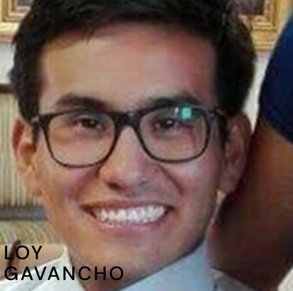
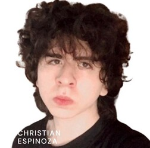
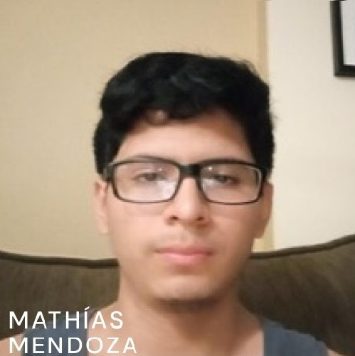

Somos un grupo de estudiantes de la Universidad UPC comprometidos en brindar apoyo
a adolescentes que engrentan desafíos en su salud mental. Nuestra misión es ayudarles a
mejorar su bienestar emocional y mental.

Loy Harold Gavancho Luján con código u202117526, estudiante de las carreras de Ingeniería de Sistemas de Información por la UPC y estudiante de la carrera de Ingeniería Industrial por la Universidad de Arizona. Considero que a partir de la experiencia que estoy desarrollando como estudiante de ingeniería en dos ramas disímiles, me será pertinente aportar habilidades vinculadas con el escalamiento del negocio y las posibles decisiones estratégicas, entre ellas el entender adecuadamente a nuestro mercado objetivo, y elaborar propuestas de negocio que nos habiliten monetizar la propuesta de valor. Además, cuento con experiencia laboral como comercial en B2B, lo que podría permitirnos tener la llegada adecuada a posibles inversionistas y clientes de todo tipo.
Mi nombre Alvaro Pinto, soy un estudiante de 18 años que cursa el 4to ciclo de la carrera Ingeniería de Software con el código estudiantil U202213384. Considero que mis ideas pueden apoyar al trabajo en grupo y asimismo al proyecto con el fin de obtener los mejores resultados posibles. Como integrante de este grupo haré uso de los conocimientos que he adquirido sobre la programación en el lenguaje C# y C++ e investigaré aún más para ampliar mis conocimientos y así lograr desarrollar un mejor trabajo.
Me llamo Nelson Serrano, estudiante del cuarto ciclo de Ingeniería de Software con el código estudiantil U202214733. Decidí estudiar esta carrera por su importancia en el mundo de la tecnología y la variedad de especialidades. Las habilidades en las que puedo aportar en el grupo y las he ido aprendiendo desde que empecé en la universidad han sido dominio y práctica de C++, documentación de proyectos y metodologías ágiles, conocimientos básicos de base de datos y python a un nivel básico dado que lo estoy aprendiendo continuamente con las clases en línea.

Mi nombre Christian Espinoza, soy un estudiante de 18 años que cursa el 4to ciclo de la carrera Ingeniería de Software con el código estudiantil U202213208. Poseo ideas únicas, estrafalarias e innovadoras para que el trabajo logre sobresalir. Adicionalmente también tengo experiencia en editar diferentes tipos de multimedia como videos y un conocimiento general en el desarrollo de aplicaciones.

Mi nombre es Mathias Mendoza, tengo 18 años y estoy cursando el 3er ciclo en la carrera de Ingeniería de Software de la Universidad Peruana de Ciencias Aplicadas. Mi código estudiantil U202216282 Elegí esta carrera por mero gusto a la programación y mientras más aprendo sobre esta carrera, más me gusta. Con respecto a la programación tengo especialidad en el lenguaje C++ por lo estudiado en la universidad, además de Python que fue lo que practiqué por clases online. Tiendo a pasar mis horas libres programando o estudiando el curso de mi carrera para mantener la práctica y seguir mejorando.